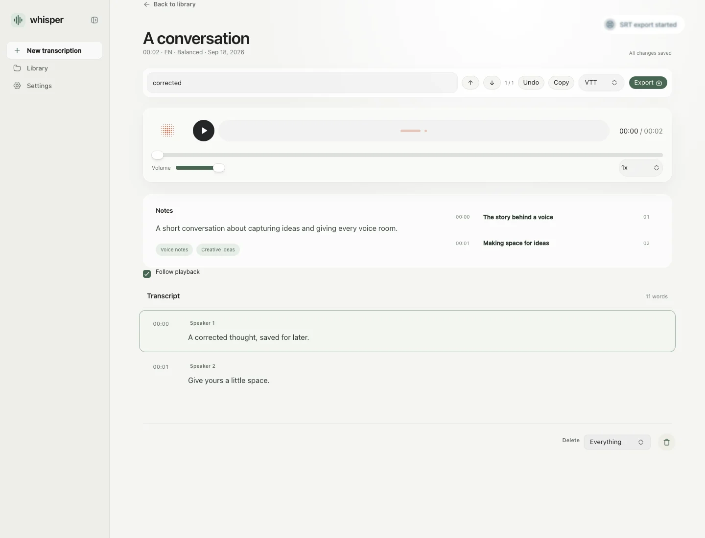

Drop it. Transcribe it.
Voice notes, interviews, lectures. Just bring your recording.
Turn your recordings into words you can work with.
Beautifully simple. Entirely on your Mac.
Free to use Made for Apple silicon

A place for every word.
Listen back. Make it yours.
Every voice has a story.
Give yours a little space.
From the first listen to the final draft.
Everything in one
quiet workspace.
Voice notes, interviews, lectures. Just bring your recording.
Listen, search, and edit. Every moment has its place.
Clean text or timed subtitles. Ready for whatever comes next.
Local by default. Your audio stays on your Mac.
Use Deepgram
only when you choose cloud transcription.
Yes. Download a transcription model during setup, then transcribe, edit, and export without an internet connection.
The current installer is built for Apple silicon Macs: M1 and later.
Audio and video files, including MP3, M4A, WAV, MP4, and voice notes. Language can be detected automatically.
Recordings and transcripts are saved locally on your Mac. You can manage them in your library and export text or subtitles.
Open the DMG and drag Whisper Studio into Applications. The current release is not yet Apple-notarized, so macOS may require approval in System Settings, Privacy & Security.
Your next good thought is waiting.